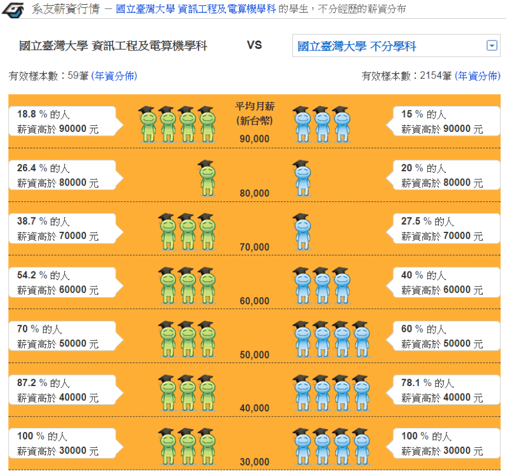

正在取得資料中，請稍候...
落點分析結果 (依薪資排序)
分析方法
- 按校系代碼會連結簡章頁面
- 按學校名稱會連結學校首頁
- 按科系名稱會連結科系首頁
- 按薪資會連結104升學就業地圖
- 去年最低級分紅色代表未達標
全國落點排序
| 校系代碼 |
校名 |
科系名稱 |
畢業生平均薪資 |
去年最低錄取分數 |
換算去年加權分數 |
| 請輸入條件來進行落點分析 |
| 分析結果僅供參考，請自行判斷是否採納本站建議，本站不負考生錄取與否之連帶責任。 |
職涯型落點分析方法
二、平均薪資計算
- 將(薪資級距x該級距人數百分比)加總
- 舉例: 臺灣大學資訊工程系平均薪資 =
$90000 x 18.8% +
$80000 x (26.4% - 18.8%) +
$70000 x (38.7% - 26.4%) +
$60000 x (54.2% - 38.7%) +
$50000 x (70% - 54.2%) +
$40000 x (87.2% - 70%) +
$30000 x (100% - 87.2%)
= $59530

三、落點分析流程
- 將考生輸入的各科成績依照「110學年度各科成績人數百分比累計表」換算成百分數
- 將各科的百分數根據「109學年度各科成績人數百分比累計表」換算為109學年度的各科成績
- 利用109學年度各科採計加權計算考生的總分
- 找出總分加10%高於最低錄取分數的校系
- 刪除110學年度有採計加權科目未輸入成績之校系
- 刪除未達學測門檻之校系
- 刪除未達最低薪資之校系
- 將符合校系依薪資由大到小排序
×
系統訊息
2021年指考落點分析預計於8/16中午12:00正式上線，目前僅供測試
×